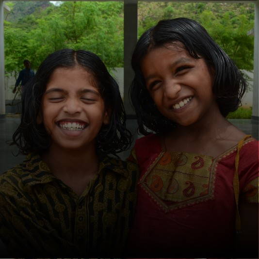

Harshita and Yashita came to Aarti as young sisters. Their home situation had become unsafe, and a neighbour aware of Aarti's work reached out on their behalf. From their first day at Aarti, the sisters refused to be separated — and Aarti made sure they never had to be.
They moved through school together, competing academically in a way that pushed them both to succeed. Harshita gravitated toward mathematics and sciences; Yashita toward language and social studies. Their teachers celebrated both.
After completing secondary schooling, Harshita enrolled in an engineering programme and Yashita in a social work degree. They remain each other's greatest supporters.
“Aarti didn't just give us a home. It gave us permission to grow in our own directions — while making sure we always had each other.”
Harshita and Yashita's story is one of sibling bonds, individual paths, and shared gratitude — a testament to what happens when girls are kept together and given room to become themselves.
Harshita is in her final year of engineering and Yashita is completing her social work placement. Both plan to stay connected to Aarti's work throughout their careers.